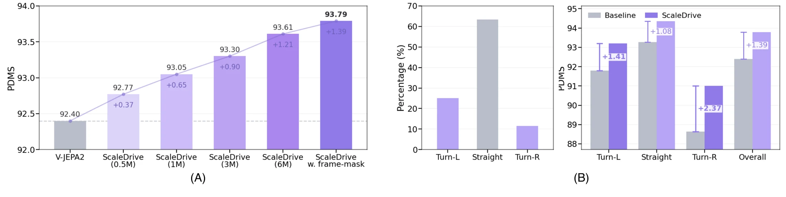

Scaling Action-Free Video Latent Prediction for Transferable Representations in End-to-End Autonomous Driving
Abstract
End-to-end autonomous driving policies require effective visual representations that capture both spatial scene structure and temporal dynamics. Video latent prediction has emerged as an effective paradigm for learning spatiotemporal visual representations, yet it remains unclear whether scaling this objective with action-free driving videos can yield representations that benefit end-to-end planning. We study action-free video latent prediction as a scalable pretraining objective and introduce ScaleDrive, a driving-oriented framework pretrained exclusively on large-scale internet open-world driving videos, without action annotations or benchmark-specific data. We keep the pretrained video encoder frozen during downstream end-to-end planning training to isolate the transferability of representations learned from internet driving videos. Ego-motion and depth probes show that scaling action-free video pretraining progressively strengthens the temporal and geometric information encoded in the frozen representation. We systematically study the visual representation transfer across different end-to-end driving policies and closed-loop benchmarks, where ScaleDrive consistently improves downstream performance and demonstrates that scaling action-free video latent prediction yields representations that generalize across both planning policy architectures and evaluation scenarios and protocols.
Results comparison
Scaling action-free video pretraining improves downstream planning and transfers across policy architectures.

On NAVSIMv1, increasing the pretraining pool from 0.5M to 6M clips raises PDMS from 92.77 to 93.61. Adding temporal-slice masking raises it to 93.79. The reported result is 93.8 PDMS on NAVSIMv1 and 90.5 EPDMS on NAVSIMv2.
Transfer across planners
NAVSIMv1 PDMS; each ScaleDrive result is compared with the corresponding planner baseline.
| Planner | Baseline | With ScaleDrive | Gain |
|---|---|---|---|
| LTF | 83.8 | 86.2 | +2.4 |
| DiffusionDrive | 86.6 | 88.1 | +1.5 |
| DrivoR | 93.1 | 93.4 | +0.3 |
| ChainFlow | 92.6 | 93.2 | +0.6 |
Closed-loop videos
Paired clips compare ScaleDrive with the V-JEPA2 baseline in the same scenes.